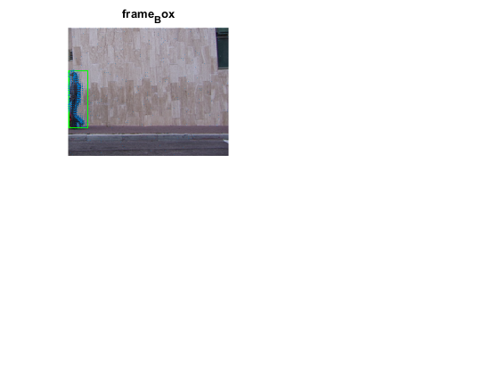

close all
clear;
clc;
videoSource = VideoReader('F:\dataset\datasets\walk\daria_walk.avi');
width = videoSource.Width;
height =videoSource.Height;
Threshold = 0.02;
CloseSize = 8;
desiredAngles = 5:5:360;
heiwid = numel(videoSource);
boundary = ones(height,width);
detector = vision.ForegroundDetector( ...
'NumTrainingFrames',5, 'InitialVariance', 30*30);
blob = vision.BlobAnalysis(...
'CentroidOutputPort', false, 'AreaOutputPort', false, ...
'BoundingBoxOutputPort', true, ...
'MinimumBlobAreaSource', 'Property', 'MinimumBlobArea', 800,...
'MaximumCount',3);
shapeInserter = vision.ShapeInserter('BorderColor','Custom');
opticFlow = opticalFlowHS('Smoothness',1, 'MaxIteration', 10, 'VelocityDifference', 0);
opticalBG = ones(height, width)*255;
frameLogical = ones(height,width);
while hasFrame(videoSource)
frameRGB = readFrame(videoSource);
frameGray = rgb2gray(frameRGB);
flow = estimateFlow(opticFlow, frameGray);
for i = 1:height
for j = 1:width
if(sqrt(flow.Vx(i, j)^2 + flow.Vy(i, j)^2) <= Threshold)
frameLogical(i, j) = 0;
else
frameLogical(i, j) = 255;
end
end
end
se = strel('square', CloseSize);
frameLogical = imclose(frameLogical, se);
frameLogical =logical(frameLogical);
bbox = step(blob, frameLogical);
out = insertShape(frameRGB,'Rectangle',bbox,'color','green');
[labelImage, numberOfImage] = bwlabel(frameLogical, 8);
blobMeasurements = regionprops(labelImage, 'Centroid');
yCenter = blobMeasurements(1).Centroid(1);
xCenter = blobMeasurements(1).Centroid(2);
if xCenter>height && yCenter>width
disp('out of iamge...');
continue;
end
[B,L] = bwboundaries(frameLogical,'noholes');
boundaries=B;
boundaries = boundaries{1};
Boun_num = size(boundaries);
xb = boundaries(:,1);
yb = boundaries(:,2);
angles = atan2d((yb-yCenter),(xb-xCenter))+180;
position_coordinate = [xb,yb,angles];
[uniqueAngles, ia, ic]= unique(angles);
uniquexb= xb(ia);
uniqueyb = yb(ia);
uniqueAngles = [uniqueAngles(end)-360; uniqueAngles; uniqueAngles(1) + 360];
uniquexb = [uniquexb(end); uniquexb; uniquexb(1)];
uniqueyb = [uniqueyb(end); uniqueyb; uniqueyb(1)];
desiredxb = interp1(uniqueAngles, uniquexb,desiredAngles);
desiredyb = interp1(uniqueAngles, uniqueyb,desiredAngles);
allcoordinate(:,1) = desiredxb;
allcoordinate(:,2) = desiredyb;
xc=round(xCenter);
yc=round(yCenter);
xe=round(desiredxb);
ye=round(desiredyb);
count = 1;
result =[];
for inx = 1:72
if all(xe(inx)==xc)&& all(yc==ye(inx))
disp('the same point with centroid');
continue;
end
if all(xc==(xe(inx))) || all(yc==(ye(inx)))
intersection_space = zeros(1,9);
intersection_space(1,1)= xe(inx);
intersection_space(1,2)= ye(inx);
intersection_space(1,3)= sqrt((xe(inx)-xCenter).^2+(ye(inx)-yCenter).^2);
result= [result,intersection_space];
continue;
end
if (xe(inx)>xc)
steps = 1;
else
steps = -1;
end
k =((ye(inx)-yc)/(xe(inx)-xc));
swit = frameLogical(xc,yc);
intersection_space = zeros(1,9);
for x = xc:steps:xe(inx)
y =k*(x-(xc))+yc;
y = round(y);
values = frameLogical(x,y);
if values ~=swit
intersection_space(1,count)= x;
intersection_space(1,count+1)= y;
intersection_space(1,count+2)= sqrt((xe(inx)-xCenter).^2+(ye(inx)-yCenter).^2);
count = count+3;
swit = values;
elseif count>7
break;
elseif all(count == 1) && all(x == xe(inx))
intersection_space(1,1)= xe(inx);
intersection_space(1,2)= ye(inx);
intersection_space(1,3)= sqrt((xe(inx)-xCenter).^2+(ye(inx)-yCenter).^2);
end
end
result = [result,intersection_space];
end
subplot(2,2,1),imshow(out),title('frame_Box');
hold on ;
plot(flow, 'DecimationFactor', [2 2], 'ScaleFactor', 20)
drawnow
hold off
dlmwrite('intersection.csv',result,'-append');
end
